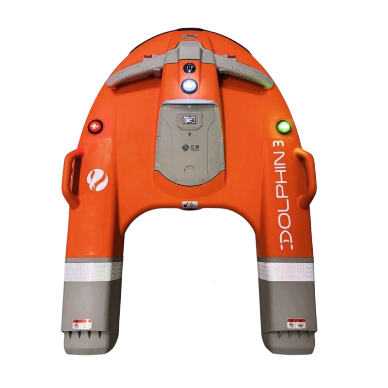
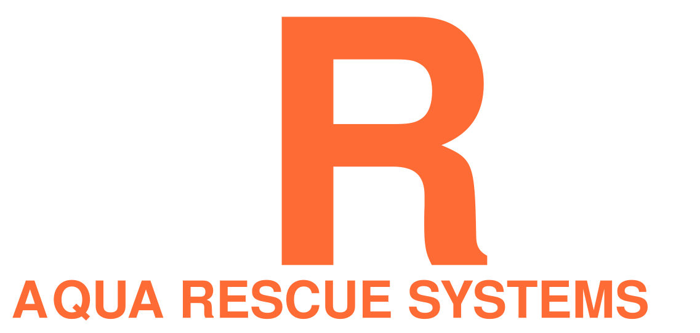
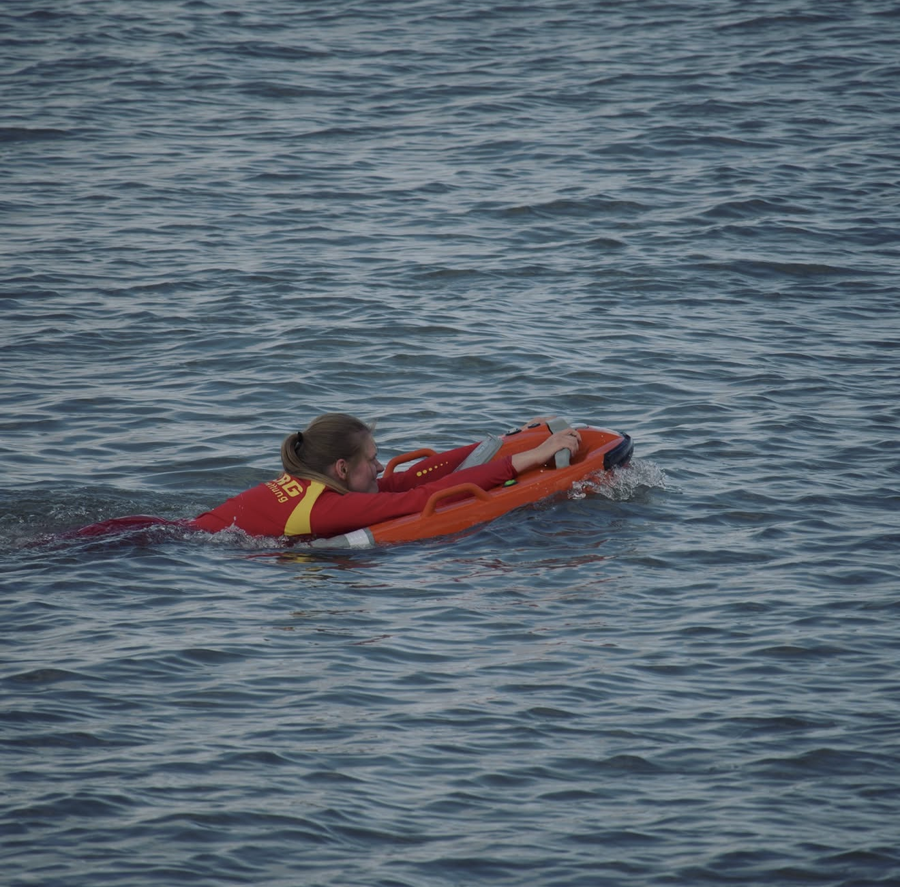
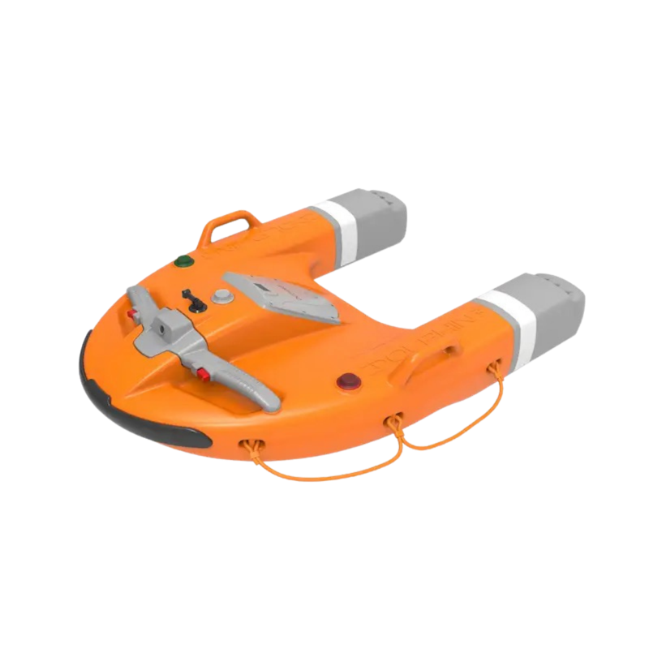
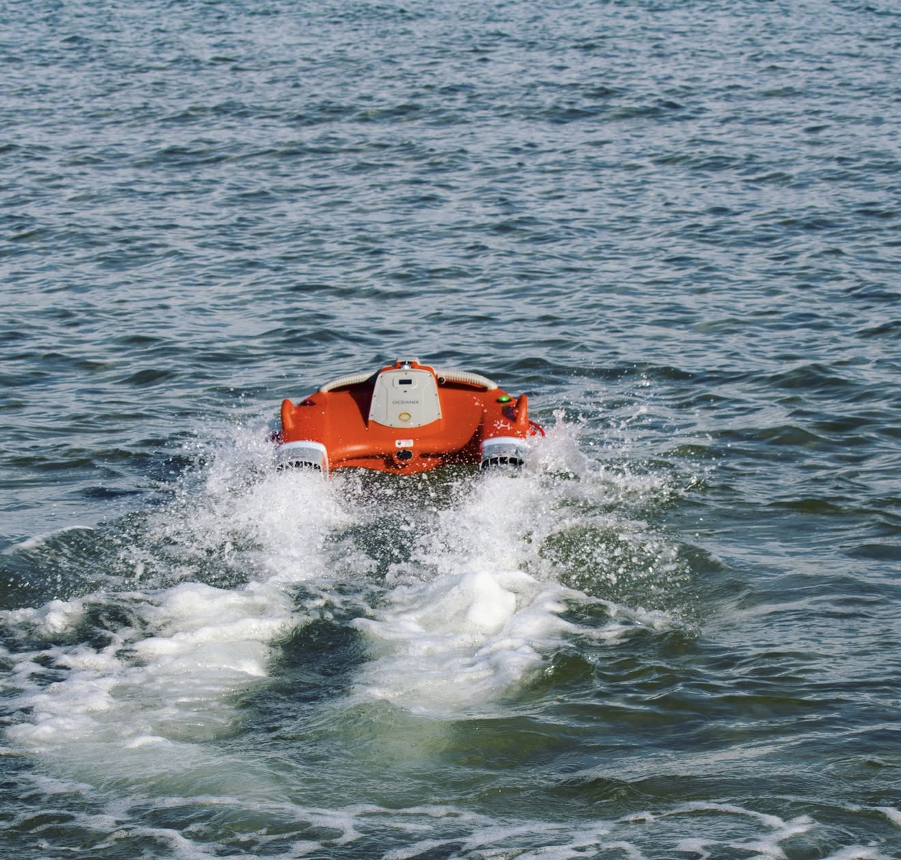
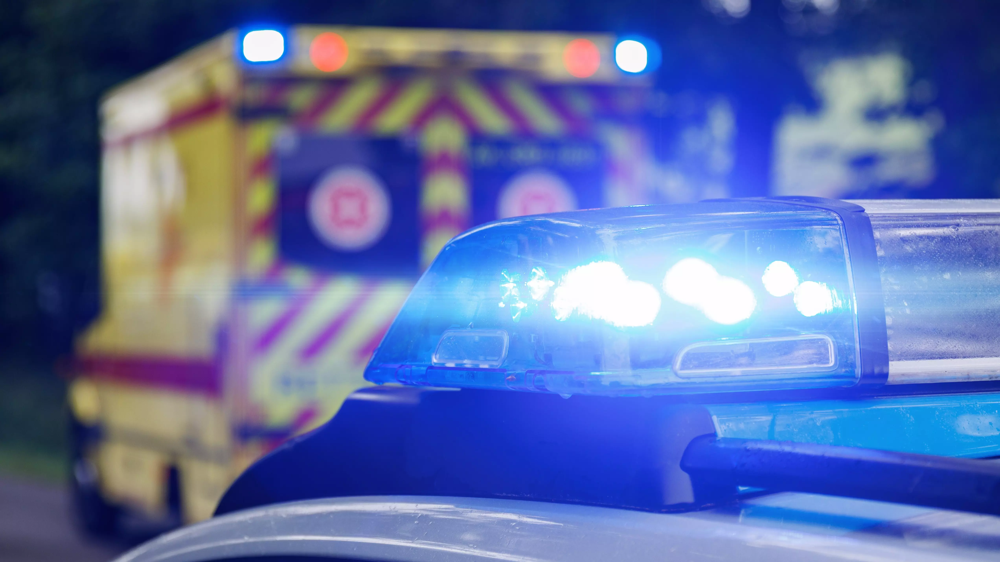
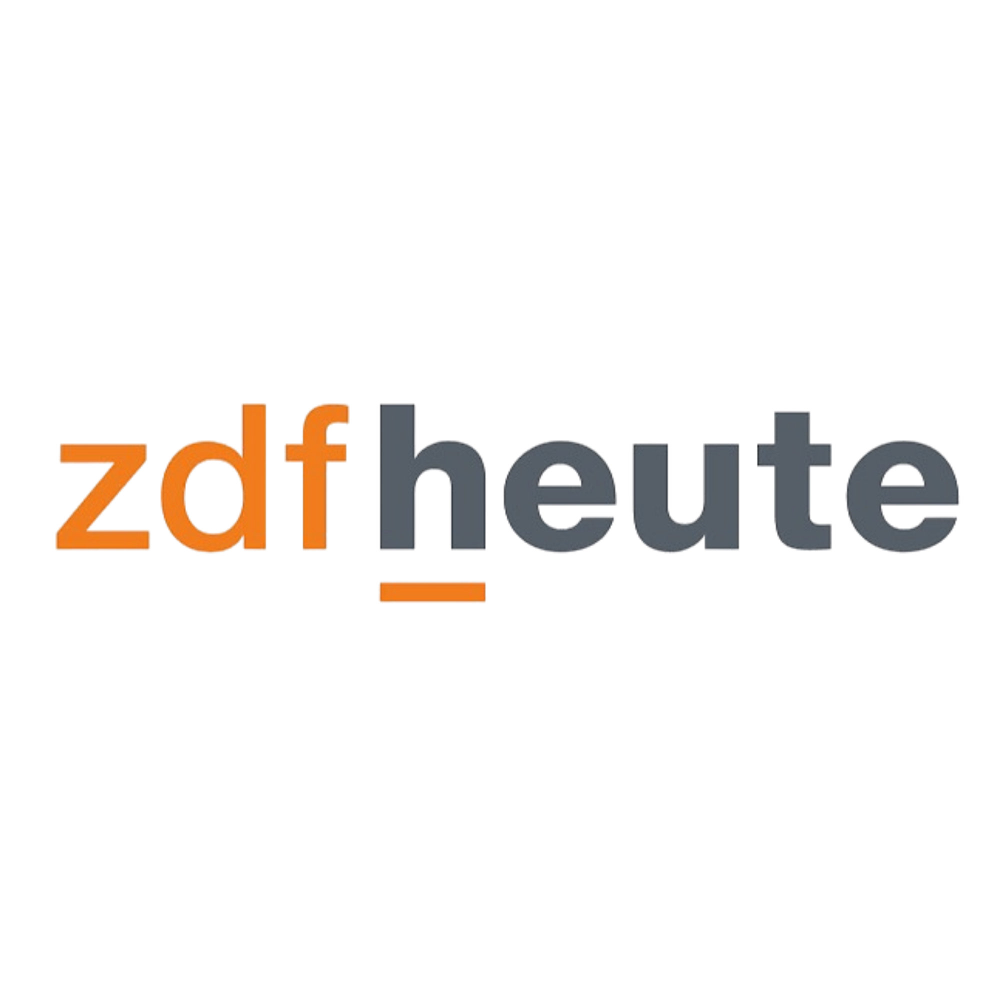
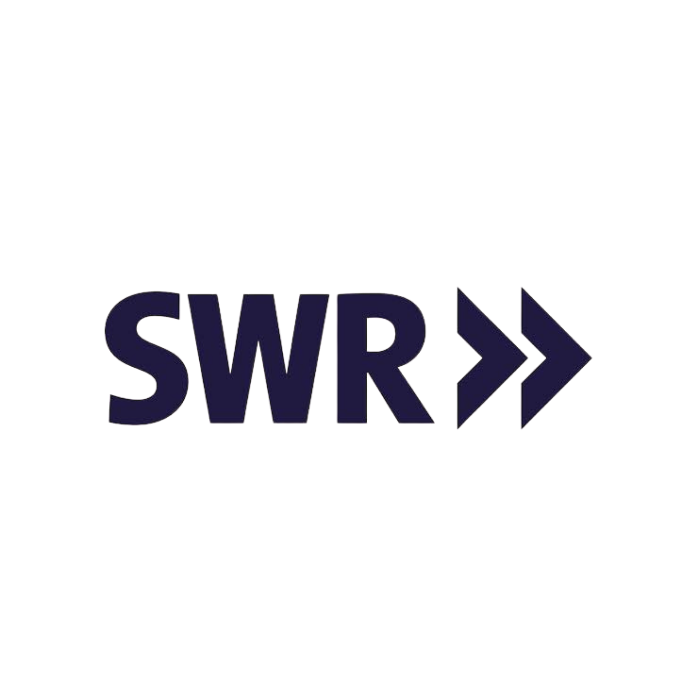
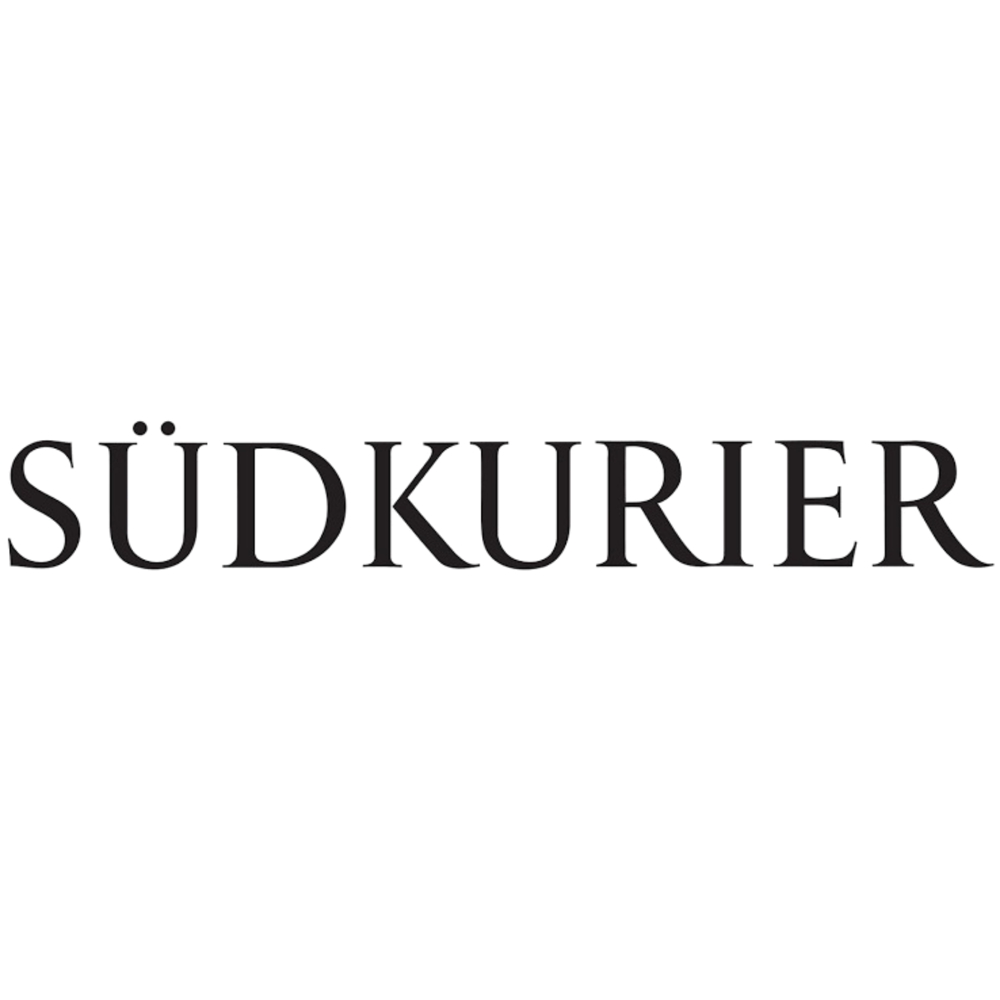

Robot autonomi per il soccorso in acqua che raggiungono le vittime in meno di 90 secondi — senza mettere in pericolo i soccorritori.
Aqua Rescue Systems sviluppa robot autonomi per il soccorso in acqua: pronti all'intervento in pochi secondi, senza rischi per i soccorritori.


Progettato per interventi rapidi in condizioni estreme. Raggiunge la vittima in meno di 90 secondi e traina fino a 1.000 kg. Ingegneria tedesca per massima affidabilità.
Ogni componente è progettato per le condizioni più difficili: maltempo, oscurità, acque agitate.


Più veloce, più sicuro e sempre disponibile rispetto a qualsiasi alternativa tradizionale.
Il Dolphin 3 è stato presentato nelle principali trasmissioni televisive nazionali e internazionali.



Azienda con sede a Bolzano, specializzata nello sviluppo di robot autonomi per il soccorso in acqua. Ingegneria tedesca, spirito italiano.
Senza impegno. Il nostro team risponde entro 24 ore in italiano, tedesco e inglese.